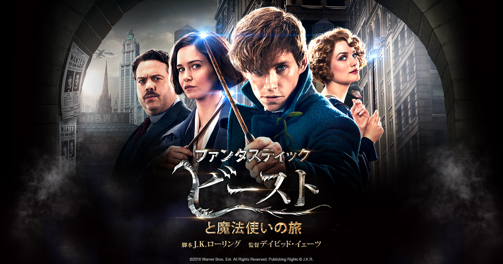

ファンタスティックビーストと魔法使いの旅（吹替版）

きっかけ
友達に教えてもらった
媒体
プライムビデオ
おとも

意外とおいしかった
感想
- とにかく CG がすごい！
- 生き物もリアルだし、オブスキュラスも液体感がかっこいい
- 映画後半になるにつれてティナがかわいく見えるのは僕だけだろうか
- 伏線残りまくりだから２作目も見たい
- 逃げ出したオブスキュラスの欠片は？
- グリンデルバルドはどうなるのか？
- ニュートとダンブルドアの関係は？
- 特典のインタビュー面白かった。CGの制作過程に解剖学専攻の人も関わっているらしい